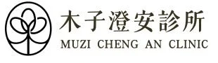
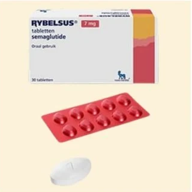
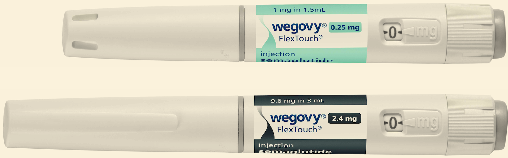
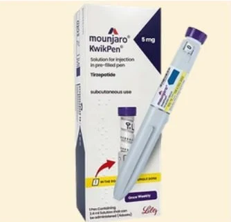
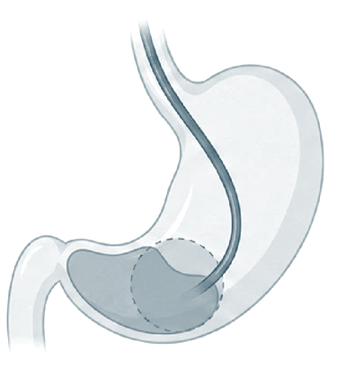
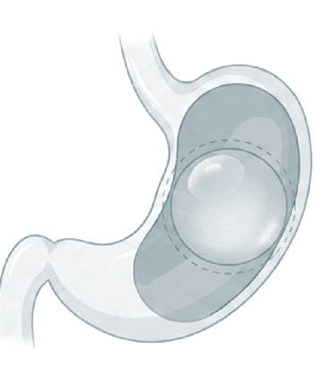
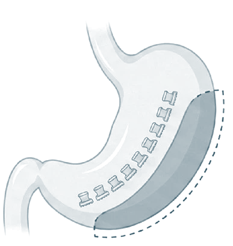
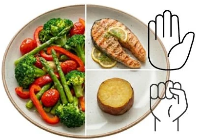

我們會依序完成三件事，再和您一起訂出計畫。
成人定期健康檢查時，測量身高、體重與腰圍，計算 BMI。
BMI、腰圍、身體組成（體脂、肌肉量）
個人病史、目前用藥、
家族病史、飲食與睡眠習慣
抽血（血糖、血脂、肝腎功能）與腹部超音波
所有人都從調整飲食、運動與作息開始。符合用藥條件的人，可以考慮藥物治療，
目前以腸泌素類藥物為主要選擇。
使用維持劑量約 3 個月後，體重下降未達原本的 5%，
或因副作用、其他原因無法用藥，
醫師會和您討論換藥、內視鏡輔助減重或減重手術。
體重數字會起伏，
飲食、運動與睡眠的習慣，才是能一直帶著走的。

肥胖是慢性、容易復發的疾病，常和代謝異常一起出現。
過重 24 ≤ BMI ＜ 27；肥胖 BMI ≥ 27
男性
≥ 90 公分
女性
≥ 80 公分
BMI 正常但腰圍超標，內臟脂肪仍可能過多。
| 腹部肥胖 | 血壓 | 空腹血糖 | 三酸甘油酯 | HDL 膽固醇 |
|---|---|---|---|---|
| 男 ≥ 90 公分 女 ≥ 80 公分 | ≥ 130／85 mmHg 或已服藥 | ≥ 100 mg/dL 或已服藥 | ≥ 150 mg/dL 或已服藥 | 男 ＜ 40 mg/dL 女 ＜ 50 mg/dL 或已服藥 |
糖化血色素（HbA1c）5.7% 至 6.4% 屬於「糖尿病前期」，需要追蹤，但不是代謝症候群的判定項目。
五項指標都能靠飲食、運動與定期檢查改善。
資料來源：衛生福利部國民健康署。
世界衛生組織把肥胖定義為複雜、容易復發的慢性病，不只是體態問題。
全球，2022 年
10 億人
以上有肥胖。
台灣成人，2017 至 2020 年
50.3% 過重或肥胖，約每兩人就有一人。
約七成睡眠呼吸中止症患者有肥胖。
有肥胖又會打鼾、睡醒仍疲倦或白天嗜睡，建議接受評估。
減重可以減輕呼吸中止與夜間缺氧。
減重 5%
肝臟脂肪減少
減重 7%
肝臟發炎改善
減重 10%
肝纖維化有機會改善
體重增加 → 膝關節負重增加 → 疼痛 → 活動減少 → 體重再增加。
減重可以減輕膝蓋疼痛。
肥胖與憂鬱會互相影響。
統合分析發現，肥胖的人日後出現憂鬱症的風險約為 1.5 倍。
資料來源：NCD-RisC，Lancet 2024；國民健康署；
Vilar-Gomez，Gastroenterology 2015；Luppino，Arch Gen Psychiatry 2010。
肥胖是基因與環境共同作用的結果，不是單純的意志力問題。
40 至 70%
的體重差異與遺傳有關
目前已找到上千個與 BMI 相關的基因位點，
FTO 基因是其中影響較明顯的一個。
每個基因的影響都很小，單一基因檢測無法預測一個人會不會胖。
統合 21.8 萬名成人的研究發現，
規律運動的人，
FTO 風險基因對肥胖的影響減少約 27%。
台灣人體生物資料庫的研究也發現，
規律慢跑的人，基因對 BMI 的影響較小。
動物研究發現，高油飲食會造成腦部下視丘發炎、干擾飽足訊號；這在人體是否成立，研究仍在進行。
資料來源：Kilpeläinen，PLoS Med 2011；Lin，PLoS Genet 2019；Yengo，Hum Mol Genet 2018。
符合下面任何一種情況，建議開始積極治療。
情況一
BMI ≥ 27
已達到肥胖。
不論有沒有其他疾病，
都建議治療。
情況二
BMI ≥ 24
再加上任何一項：
| 身高（公分） | 150 | 155 | 160 | 165 | 170 | 175 | 180 |
|---|---|---|---|---|---|---|---|
| BMI 24 | 54.0 | 57.7 | 61.4 | 65.3 | 69.4 | 73.5 | 77.8 |
| BMI 27 | 60.8 | 64.9 | 69.1 | 73.5 | 78.0 | 82.7 | 87.5 |
減重 5% 至 10%，
血糖就能改善。
血壓、血脂上升，
心肌梗塞、中風增加。
至少 13 種癌症
與肥胖有關。
BMI 越高，
整體死亡風險越高。
飲食、運動、作息三管齊下：
控制總熱量、每週運動 150 分鐘、每晚睡滿 7 小時。
資料來源：國民健康署《成人肥胖防治實證指引》；IARC，N Engl J Med 2016。
醫師會依體重與共病，決定從哪一步開始。
01
飲食調整、運動、行為改變、睡眠管理。
所有人都需要，而且貫穿全程。
3 至 6 個月效果不足，或 BMI 與共病已達用藥標準
02
腸泌素類藥物（GLP-1 受體促效劑、GIP／GLP-1 雙重促效劑）。
維持劑量約 3 個月，減重未達原本體重 5%，或無法用藥
03
胃內水球、內視鏡縮胃術（ESG）、胃內肉毒桿菌注射。
BMI ≥ 37.5，或 BMI ≥ 32.5 且有肥胖相關共病
04
袖狀胃切除、胃繞道。
每一步不是非走不可。
符合手術條件的人可以直接評估手術；
生活型態調整則一直都要持續。
| 瑞倍適 Rybelsus／Novo Nordisk |
週纖達 Wegovy／Novo Nordisk |
猛健樂 Mounjaro／Eli Lilly | |
|---|---|---|---|
 |
 |
 | |
| 成分 | Semaglutide GLP-1 受體促效劑 | Semaglutide GLP-1 受體促效劑 | Tirzepatide GIP／GLP-1 雙重促效劑 |
| 用法 | 每天早上空腹口服 3 mg 起，每月評估 調升至 7、14 mg | 每週注射一次 0.25 mg 起， 每 4 週調升， 維持 2.4 mg | 每週注射一次 2.5 mg 起， 每 4 週加 2.5 mg， 最高 15 mg |
| 特色 | 不必打針 | 大型研究證實 可降低心血管事件； 可用於 12 歲以上 青少年 | 可減少內臟脂肪； 72 週研究 平均減重 20.2% （semaglutide 組 13.7%） |
| 核准 | 台灣核准用於 第 2 型糖尿病， 減重屬適應症外使用 | 體重管理 | 體重管理、第 2 型糖尿病 |
噁心、嘔吐、腹瀉、便祕、食慾下降，
多在剛開始或調升劑量時出現。
少見但要留意：膽結石、胰臟炎
（上腹痛延伸到背部要立即就醫）。
本人或家族有甲狀腺髓質癌（MTC）、
第二型多發性內分泌腫瘤（MEN2）；
懷孕或哺乳中。
胰臟炎或膽囊疾病病史、第 1 型糖尿病、腎功能不佳（嘔吐腹瀉時容易脫水）、
正在使用胰島素或磺醯尿素類降血糖藥（低血糖風險）、計畫懷孕。
用藥前須經醫師完整評估，並搭配飲食與運動、定期回診。
資料來源：各藥品仿單；SELECT，N Engl J Med 2023；SURMOUNT-5，N Engl J Med 2025。週纖達筆型圖片：Novo Nordisk。
適用週纖達（Wegovy）與猛健樂（Mounjaro）筆型注射劑。
每週固定一天施打，一天中任何時間都可以，飯前飯後皆可。
2部位：腹部（肚臍周圍 5 公分以外）、大腿前側或上臂外側，每次換位置。
3針頭完全插入皮膚，按住注射鈕。
4劑量歸零後，針頭留在皮膚內：週纖達慢數到 6，猛健樂慢數到 5，再拔出。
5拔針後針尖有一滴藥液是正常的。
週纖達
猛健樂
單位為 mg。第一次使用一律從最低劑量開始，不一定要升到最高；調整劑量請與醫師討論。
操作或施打時間有任何疑問，歡迎隨時詢問醫護團隊。
少量多餐、吃慢一點
2有飽足感就停止進食
3避免油炸、辛辣的食物
飯後不要馬上躺下
5睡前 3 小時不進食
6適度運動，水分喝足
早上起床、空腹時服用。
2配不超過 120 mL 的白開水，整顆吞服。
3服藥後至少等 30 分鐘，才能吃東西、喝其他飲料或吃其他藥。
不可壓碎、剝半或咀嚼，會影響吸收。
兩劑之間間隔足夠就可以：
週纖達、猛健樂都要間隔至少 3 天（72 小時）。
任何情況都不可一次打兩倍劑量。
資料來源：週纖達、猛健樂、瑞倍適仿單。
從口腔進入胃部操作，身體表面沒有傷口。
| 胃內肉毒注射 | 胃內水球 | 內視鏡縮胃術 ESG | |
|---|---|---|---|
 |
 |
 | |
| 做法 | 在胃壁注射肉毒桿菌素， 減緩胃排空 | 放入水球佔據胃容量， 期滿取出 | 用縫線把胃縫小，不切除胃 |
| 效果 | 作用約 3 至 6 個月； 研究結果不一致， 減重效果有限 | 置放 6 至 12 個月 | 研究追蹤 5 年 仍可維持減重效果 |
| 副作用 | 少數胃部不適、便祕 | 置放初期噁心、嘔吐、 腹脹；少數胃潰瘍 或需提早取出 | 術後噁心、腹痛； 少數出血、胃周圍積液 |
| 適合 | BMI ≥ 27 | BMI ≥ 27 | BMI ≥ 30 |
胃內肉毒注射屬於藥品適應症外使用。
實際適用條件、效果與費用，請與醫師討論；
內視鏡治療後仍需搭配飲食與運動。
資料來源：MERIT，Lancet 2022；ASGE／ESGE 內視鏡減重治療指引。
每次回診要看的東西不一樣。把日子記下來，比較容易持續。
2 週
開始用藥後
噁心、便祕等腸胃狀況是否可以忍受，決定能不能調升劑量。
1 個月
體重、腰圍、體脂與肌肉量，一起檢視這個月的飲食與運動。
3 個月
確認減重是否達到原本體重的 5%；
抽血看血糖、血脂、肝腎功能。
6 個月
看脂肪肝改善多少，追蹤血壓、血糖、血脂等共病指標。
長期
規律回診，目標是「不復胖」。停藥前後尤其要留意體重變化。
持續噁心嘔吐、吃不下，或上腹痛延伸到背部、右上腹痛，不必等到回診日。
藥物能幫忙降低食慾，真正讓體重穩定下來的，是每天怎麼吃。

每一餐，照這個比例裝
先吃菜和蛋白質，最後吃主食。
照這個比例，不用計算熱量，
也能自然少吃一些。
蔬果全穀 主食換成糙米、地瓜、藜麥或燕麥。
2優質蛋白 多吃魚、蛋、豆腐、雞胸；香腸、火腿等加工肉品少吃。
3好油堅果 烹調用橄欖油或苦茶油；點心選無調味堅果，一天一小把。
4多喝水少糖 每天喝水 1500 至 2000 mL，無糖茶取代含糖飲料。
5原型食物 少加工、少沾醬、少油炸。
每天每公斤體重 1.2 至 1.5 公克，70 公斤的人約 84 至 105 公克。
蛋白質能延長飽足感，也減少減重時的肌肉流失。
| 常見食物 | 份量 | 蛋白質約 | 常見食物 | 份量 | 蛋白質約 | |
|---|---|---|---|---|---|---|
| 雞胸肉 | 100 公克 | 23 公克 | 傳統豆腐 | 100 公克 | 8 公克 | |
| 鮭魚 | 100 公克 | 20 公克 | 無糖豆漿 | 240 mL | 8 公克 | |
| 雞蛋 | 1 顆 | 7 公克 | 無糖優格 | 200 公克 | 7 公克 |
腎功能不佳的人，蛋白質攝取量請先與醫師討論。數值為概略值，依品牌與做法略有不同。
規律三餐不跳餐 可加 1 至 2 次健康點心，避免餓過頭後暴食。
2餐前喝一碗清湯 可減少正餐食量；濃湯熱量高，要避免。
3細嚼慢嚥 每餐至少 20 分鐘，讓大腦接收到飽足訊號。
4口渴別誤當飢餓 餐間多喝水或無糖茶。
5準備低熱量點心 小黃瓜、番茄、蒟蒻、少量堅果。
6睡滿 7 小時 睡眠不足會讓飢餓荷爾蒙上升，更容易暴食。
無糖優格配莓果與一小把堅果、全麥吐司一片、無糖豆漿一杯
午餐糙米藜麥飯一拳、煎魚排一掌、燙青菜半盤
晚餐豆腐溫沙拉、烤時蔬、清湯一碗
點心番茄、小黃瓜，或一份水果（約一個拳頭大）
定時進食 不要整天不吃再一次吃很多，血糖與食慾比較穩定。
2進食順序 先吃蔬菜與蛋白質，再吃澱粉，飯後血糖上升較緩和。
3腸胃不適時 選稀飯、蒸蛋、蔬菜湯等清淡食物，避開油膩與辛辣。
4定期回診 體重卡關時，醫療團隊會和您一起檢視飲食並調整。